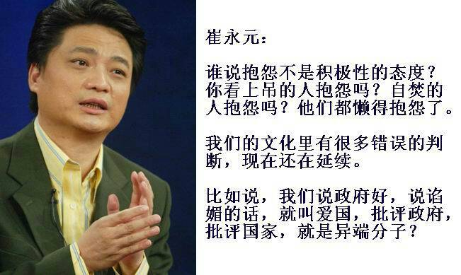

Conversation with 81184027 at Tue 27 May 2014 07:10:45 AM CST on 154115835 (webqq)
(05/27/2014 06:22:49 AM) 安徽-市区&钟馗: http://forum.china.com.cn/forum.php?mod=viewthread&tid=3648380&extra=page%3D1%26filter%3Dtypeid%26typeid%3D850%26typeid%3D850
(05/27/2014 06:22:49 AM) 安徽-市区&钟馗: http://forum.china.com.cn/forum.php?mod=viewthread&tid=3648380&extra=page%3D1%26filter%3Dtypeid%26typeid%3D850%26typeid%3D850
(07:11:43 AM) 光: 茅于轼：愚昧人事业很难成功，他们长远地处于社会的底层。对这种情况他们认为是环境的不公造成的，而不去反省自己。环境固然有不公，但同样的环境下也有许多成功人士。有更多的人从底层上升到中高层。但这种机不会给愚昧的人。他们固守自己的世界，拒绝向外看，不肯吸取新东西。别人想帮助他也无能为力
(07:48:04 AM) 蔚蓝的天空: 光 你是在说弱水吗
(07:48:07 AM) 光: 《美国语文》：从敬畏自然到土地伦理
——公民教育框架下的自然与生命
《美国语文》：从敬畏自然到土地伦理
1804年-1806年间，麦里维泽·李维斯和威廉姆·克拉克带领着一队退役士兵，沿着密苏里河从圣路易斯行进到密苏里河的源头，行程8000英里，完成了新大陆发现以来第一次对大峡谷的穿越。在内战中失去一条手臂的约翰·威斯利·鲍威尔成为其中的成员，他以《地球上最壮观的景象》为题，记录了他的所见所闻，他如实地描述了波澜壮阔的地理画卷。这样的文字记录，在200多年后的从未去过美国的人看来，依然觉得心潮澎湃：”无论是语言的符号还是语言本身都无法充分描绘大峡谷的奇观……这个巨人般的奇观是经过人类无法计算的漫长岁月，由风雨雕琢出无穷的细致特征而最终形成的。要描述它，这与描述天空中的繁星或由橡树、松树、杨树、山毛榉、菩提树、山楂树、郁金香、百合花、玫瑰花、蕨类、苔藓和地衣等植物装饰而成的种种美丽的森林具有相同的难度。”在感叹面对奇景，语言文字的无力之后，约翰·威斯利·鲍威尔总结道：“形态、颜色和声音的壮丽和优美在大峡谷中得到了统一——它的形态甚至那些山脉也无法与之媲美，他的颜色可与日落争辉，而它的声音则跨越了从暴风雨到叮当作响的雨滴、从奔流到喷珠洒玉的泉水的全部音域。但还不止这些：它还是一片广大的区域。”
我们能够看到，一个探险者，一个对于大自然有着深切热爱的人，他下笔时那种近乎膜拜顶礼的情感。在麦里维泽·李维斯和约翰·威斯利·鲍威尔的笔下，这一片大陆的神奇，那种气象万千，令人升腾出一种敬畏之情。只有造物主的鬼斧神工，才有这样壮丽的图景。我能想见这位探险家，面对这样的奇景时，那种摒声敛息的崇拜之情。这是《美国语文》中的一课，收录在“国家的发展”这一章。
有意思的是，这队人马穿越大峡谷进程之中的1803年，日后被认为是“先验主义者”的爱默生，出生了。我不能考证爱默生在其年轻时代有没有阅读过这些探险家的笔记，是否受到他们的影响。但意味盎然的是，爱默生在其随笔中，同样表现出了一种对大自然的近乎崇拜的感情。同样作为《美国语文》的一课，节选的爱默生《自然》一文有关章节，里面是一种非常接近的，对大自然的迷醉：“但就在这时我的心中涌起一阵极度的喜悦，我快乐得几乎接近了恐惧的边缘。同样，在森林里，一个人抛掉他所经历的岁月，就像一条蛇蜕掉了自己的皮一样，因此无论在生命的那个时期，他都是一个孩子。在森里里人们拥有永恒的青春。在这些上帝的花园里，笼罩着端庄神圣的气氛，常年举行着欢宴，园里的客人即使过了一千年也找不到厌倦的理由。”森林、自然，对爱默生而言，简直就是天堂。似乎自从失乐园之后失落的天堂，在大自然里得以找回。
《美国语文》的编者认为，个人主义，独立，对自然奇迹的欣赏，这是在爱默生帮助之下，才扎根于美国精神之中的基本观点。然而在通读美国语文的过程中，我发现，爱默生的思想，也完全不是凭空而来，这一片神奇的崭新的大陆，孕育了崭新的思想，是为旧的世界所不具有的。从《穿越大峡谷》中的描述，到爱默生的书写，那种天真的敬畏之情一以贯之，我们不能认为这是一种偶然。是以深受爱默生影响的梭罗也不例外，他的《瓦尔登湖》被视为先验主义的杰作，里面蕴含的自然哲学，迄今仍然可以指导我们如何与大自然相处，以及，让我们更进一步地沉下心来，思考我们生命最为核心处的价值。
梭罗这样写道：“我到森林去是因为我想要从容地生活，去面对生活的本质，看看我是否无法学到生活要教给我的东西，并且在我死去的时候不会发现我不曾生活过。我不想过不是生活的生活，因为生活是那样可贵，我也不愿一味顺从，除非那是十分必要的。我想要深入生活，吸出生活中所有的精髓，强壮得像斯巴达人一样生活，彻底打败所有不属于生活的东西……”
在这样的敬畏与热爱大自然的哲学思考指导之下，现代环保主义较早地诞生在美国，也就完全可以理解。在中国，因为有识之士的译介，有两本书深深地改变了人们的观念，开始让国人理解，什么是对大自然的敬畏，从而更深地理解了环境保护的观念。一本是李奥帕德的《沙郡年记》，一本是雷切尔·卡逊的《寂静的春天》。这两本书，也同时是在美国影响深远的唤醒环保主义的力作。而这两本书中蕴含的与自然和谐相处之道，自爱默生而梭罗，是一种精神的传递。是以李奥帕德才被认为是二十世纪的梭罗。
李奥帕出生于1887年生，是美国伟大的生态学家，环境保护主义的先驱。《沙郡年记》是李奥帕德的代表作，也是一本影响深远的自然哲学著作。在我看来，这一书中，最重要的在于，李奥帕德提出了“土地道德（或译为大地伦理）”这一概念。他说：“我们倡导土地道德就是要把人类在共同体中以征服者面目出现的角色，变成这个共同体平等的一员公民。它暗含着对每个成员的尊敬，也包括对这个共同体本身的尊敬。”这个意思是说，人类也是大自然共同体之中的一员，是物种之一，并不具有对大自然的统治地位。甚至，正是那种“统治”大自然的思想，造成了我们逐渐严重的生态危机。为了实践自己的理想，李奥帕德在远离现代文明的威斯康星河畔，买下一座被被遗弃的沙化农场，试图用双手“重建我们在其他地方正在失去的那些东西”。他在此努力十三年，直至1943年，即《沙郡年纪》手稿完成后不到一个月，他在协助扑灭邻居农场的大火时丧生。他用生命诠释了对“土地伦理”的认知。
雷切尔·卡逊《寂静的春天》初版于1962年，甫经出版，便被置于舆论的风尖浪口。因为卡逊指出的现实是如此的震撼人心，因而遭到了史无前例的剧烈围攻。尤其是农药制造商，因为卡逊在里面说到了DDT的滥用对人类造成的直接与间接的伤害，对生态平衡造成的不可逆转的破坏。在上世纪60年代以前，“环境保护”这个词几乎没有被提出来过。环境保护在当时并不是一个存在于社会意识和科学讨论中的概念。尤其人类随着工业革命隆隆的机器声，不断向大自然宣战，而以“征服大自然”作为人类功绩的象征。没有人怀疑“人定胜天”这种观念的正确性，因为人类文明的进展很多都基于此意识而获得的，人类当前的许多经济与社会发展计划也是基于此意识而制定的。 蕾切尔·卡逊第一次对这一人类意识的绝对正确性提出了质疑。她所坚持的思想终于为人类环境意识的启蒙点燃了一盏明亮的灯。
无论是李奥帕德还是雷切尔卡逊，我们可以看到他们的思想或多或少有承爱默生与梭罗而来之处。这种思潮起源于美国也不是一件偶然的事，而是与这个民族的创新能力与反思精神结合在一起的。托克维尔曾说“美国之伟大不在于她比其他国家更为聪明，而在于她有更多能力修补自己犯下的错误。”这正是美国精神最令人赞叹的地方之一。
而这一套《美国语文》，显然为我们呈现了这样一种精神脉络。这样的美国精神的出现，也不是偶然的，与美国建国之初的先贤的教育理念有关。这种教育理念，我们现在可以给出一个名词，叫做“公民教育”。
一般而言，公民教育指社会成员成为“好公民”的教育，以建立公民个体在社会的角色和地位，因此狭义的公民教育的内容会反映社会对公民政治、生活、社群等基础关注，也反映在个人、家庭、社区、国家、全球各层面所需的公民知识、态度及价值观。这种公民教育的观念并非起源于美国，但确实在美国获得了极大的拓展。
美国《独立宣言文集》的签署者，建国之父之一的拉什，在一篇名为《建立公立学校的计划》的文章中说到：“让我们的学生得到这样的教育，知道他并不属于他自己，而是公共的财产，他应该爱自己的家庭，但在国家需要的时候应该忘记和放弃家庭。他必须把国家的自由看成是自己肩负的重任……”这里很重要的一个词，叫做“公共的财产”，维护国家自由，被看成公民的基本责任。很显然，在这样的教育理念之下，公民精神就成为美国教科书的核心理念之一。而对大自然的责任，便是这种公民精神的应有之义。是以我们可以看见，这种特质在梭罗身上表现得非常统一和谐。一方面，他隐居森林，寻找生命的意义，一方面，他写出经典雄文《公民不服从》。因为在那个时代的美国人看来，所谓启蒙的美德，是以个人的自由和权利为本位的，它要求每个公民在坚持自己不可让渡的权利的同时，担负起自己 推脱的责任，它强调人的自尊、自爱、自强、自立、自治和自律。所以梭罗不是中国式的隐士，二十具有现代公民意识的积极践行者，在向内与向外的两个路径上，梭罗都堪称楷模。无论是梭罗，李奥帕德，还是雷切尔·卡逊，都可称为此种美德的楷模。杰弗逊对这样的启蒙教育充满了期待，在给朋友的信里，杰弗逊说：但愿这个世界把这种觉醒当作一种信号，激发人们挣脱锁链，争取公民自治的幸福和安全。
值得一说的是，现代环保思想正是敬畏生命与自然的具体显现，但同样是对自然与生命的思索，《美国语文》并没有仅仅提供这些先贤的著述，而让读者毫无保留地接受而已。因为《美国语文》的结构，从根本上来说，便是开放的。我们赞叹于爱默生的哲学沉思，而编者却不叫我们轻信与盲信，总是不失时机地提醒读者，需要时刻保持自己的思考。比如，在“思考评价”这一环节，编者提出，你接受爱默生的关于自然的观点吗？并请解释原因。质疑与反思，也是公民教育的应有之义。这是与中国教材非常显著的区别之一。
在加州某小学的校园网上，有这么一则教学的理念，标题为《我家的二年级学生都在学校里学什么》。其中关于阅读与写作，有两条非常令人深思的内容，一条说要“利用不同来源的信息”，一条则有关于聆听，要将注意力关注在讲话者身上，能回忆讲话的内容；并能由讲话内容联系到自身经验和领悟。利用不同的信息来源，便能占有更多的信息，锻炼的是人的综合的理性思维的能力。则请记住，这是对小学二年级孩子的要求。独立思考与判断的能力，从小学开始就奠定了。
这样一种制度性的安排之下，对质疑与创造的鼓励，才保证了美国精神的思想生命力。关于大自然，关于环境保护，在最初之时，无论爱默生还是雷切尔·卡逊，他们在观念提出之初，都是小众的，甚至被广泛指责的。但他们的思想精髓，终于能在美国生根发芽、发扬光大，进而影响全世界，从教育的原则来看，都是不奇怪的。
(07:48:19 AM) 光: http://blog.tianya.cn/blogger/post_read.asp?BlogID=16063&PostID=58165968
(07:49:04 AM) 光: 在加州某小学的校园网上，有这么一则教学的理念，标题为《我家的二年级学生都在学校里学什么》。其中关于阅读与写作，有两条非常令人深思的内容，一条说要“利用不同来源的信息”，一条则有关于聆听，要将注意力关注在讲话者身上，能回忆讲话的内容；并能由讲话内容联系到自身经验和领悟。利用不同的信息来源，便能占有更多的信息，锻炼的是人的综合的理性思维的能力。则请记住，这是对小学二年级孩子的要求。独立思考与判断的能力，从小学开始就奠定了。
(07:50:42 AM) 光: 因为在那个时代的美国人看来，所谓启蒙的美德，是以个人的自由和权利为本位的，它要求每个公民在坚持自己不可让渡的权利的同时，担负起自己 推脱的责任，它强调人的自尊、自爱、自强、自立、自治和自律。所以梭罗不是中国式的隐士，二十具有现代公民意识的积极践行者，在向内与向外的两个路径上，梭罗都堪称楷模。
(07:51:48 AM) 光:
梭罗这样写道：“我到森林去是因为我想要从容地生活，去面对生活的本质，看看我是否无法学到生活要教给我的东西，并且在我死去的时候不会发现我不曾生活过。我不想过不是生活的生活，因为生活是那样可贵，我也不愿一味顺从，除非那是十分必要的。我想要深入生活，吸出生活中所有的精髓，强壮得像斯巴达人一样生活，彻底打败所有不属于生活的东西……”
(07:54:24 AM) 上善若水: 最近我也喜欢看动画片！
(07:54:40 AM) 上善若水: 纯粹的简单而快乐
(07:54:21 AM) 光: 嗯
(07:55:17 AM) 上善若水: 天空，拒绝向外看的人是谁呢
(07:55:49 AM) 上善若水: 拒绝向外学习的不正是你吗？
(07:55:56 AM) 光: (07:49:04 AM) 光: 在加州某小学的校园网上，有这么一则教学的理念，标题为《我家的二年级学生都在学校里学什么》。其中关于阅读与写作，有两条非常令人深思的内容，一条说要“利用不同来源的信息”，一条则有关于聆听，要将注意力关注在讲话者身上，能回忆讲话的内容；并能由讲话内容联系到自身经验和领悟。利用不同的信息来源，便能占有更多的信息，锻炼的是人的综合的理性思维的能力。则请记住，这是对小学二年级孩子的要求。独立思考与判断的能力，从小学开始就奠定了。
(07:56:01 AM) 光: 这就是我们国家的差距
(07:56:12 AM) 上善若水: 茅于轼是个让人尊敬的老者！
(07:56:31 AM) 上善若水: 不过五毛，毛粉们都恨他入骨呀
(07:56:42 AM) 上善若水: 天空，难道你不敢他吗？
(07:56:53 AM) 上善若水: 天空，难道你不恨他么？
(07:56:23 AM) 光: 我发现在中国即使是大学生也普遍缺乏这种能力
(07:56:40 AM) 光: 求真的能力
(07:57:02 AM) 光: 看看无数的上当者吧
(07:57:03 AM) lost message from #118203 to #118204
(07:57:37 AM) 上善若水: :-(真是让人难过的事
(07:57:33 AM) 光: 什么样的教育能造就这么多不善于思考的头脑
(07:58:14 AM) 上善若水: 就是我的孩子，千千万万的孩子在接受这样的垃圾洗脑教育
(07:57:47 AM) 光: 嗯
(07:57:57 AM) 光: 兼听则明
(07:58:22 AM) 上善若水: 我们却无能为力！
(07:58:10 AM) lost message from #118210 to #118210
(07:58:43 AM) 潮哥: 对呀，有啥办法呢
(07:58:20 AM) 光: 这是我们祖先很早就总结出来的智慧名言
(07:59:05 AM) 上善若水: 天空，出来吐槽
(07:58:46 AM) 光: 但是为什么没有落实到基础教育里面呢
(07:58:48 AM) 光: 反而是美国
(07:58:55 AM) 光: 很重是这点
(07:58:58 AM) 光: 重视
(07:59:50 AM) 上善若水: 恩
(07:59:46 AM) lost message from #118218 to #118218
(08:00:19 AM) 上善若水: 这周无论他妈的什么事情，都要回去陪孩子过儿童节！
(07:59:52 AM) 光: 嗯
(08:00:58 AM) 上善若水: 天垮了都不他M的管了！
(08:02:06 AM) 潮哥: 美国，至少100啊
(08:02:28 AM) 潮哥: 200年没没有哪个国家可以超越的
(08:03:09 AM) 潮哥: 这是为什么呢
(08:03:35 AM) 潮哥: 还复兴？照这样下去能不亡国都阿弥陀佛了
(08:08:14 AM) 上善若水: 所以，真不敢离孩子太远
(08:18:53 AM) 潮哥: 请相信本届政府
(08:19:16 AM) 福建-福州&水浒: :D
(08:21:09 AM) 潮哥: :D
(08:21:29 AM) 福建-福州&水浒: 从小学生守则可以看出中国孩子接受的是什么教育，
(08:23:07 AM) lost message from #118231 to #118231
(08:23:40 AM) 潮哥: 怎么办哦
(08:23:40 AM) 潮哥: 有钱赶紧移民
(08:25:43 AM) 福建-福州&水浒: 让孩子先走 (08:31:38 AM) 光: 美国《独立宣言文集》的签署者，建国之父之一的拉什，在一篇名为《建立公立学校的计划》的文章中说到：“让我们的学生得到这样的教育，知道他并不属于他自己，而是公共的财产，他应该爱自己的家庭，但在国家需要的时候应该忘记和放弃家庭。他必须把国家的自由看成是自己肩负的重任……”
(08:32:21 AM) 光: 质疑与反思，也是公民教育的应有之义。这是与中国教材非常显著的区别之一。
(08:32:59 AM) 蔚蓝的天空: @上善若水 矛老头是一只在佛头上乱飞的绿头苍蝇
(08:32:45 AM) 光: 质疑与反思
(08:33:28 AM) 蔚蓝的天空: 不过其本人多少还是有点水平 没有那么垃圾
(08:33:04 AM) 光: 是人类区别于电脑的区别之一
(08:33:48 AM) 山东-青岛&昆吾: 请相信本届政府！
(08:34:02 AM) 山东-青岛&昆吾: 不相信的都是轮子余孽！
(08:33:32 AM) 光: 如果有一天电脑也学会了质疑和反思
(08:33:47 AM) 光: 那么电脑和人类的区别就不大了
(08:34:27 AM) 憧憬￠未来: 你就能统治人类了:b
(08:34:41 AM) 憧憬￠未来: 也是 咱国家教育是不是批量生产电脑的
(08:34:37 AM) 光: 遗憾的是，确实如此
(08:35:04 AM) 光: 成功者是少数
(08:35:25 AM) 光: 现代中国的教育是培养失败者的教育
(08:35:28 AM) 光: 大量的失败者
(08:36:04 AM) 憧憬￠未来: 成功者都是不老实接受“教育”的那一帮“坏学生”:p
(08:36:13 AM) 蔚蓝的天空: 要是都成功那就出问题
(08:35:52 AM) 光: 成功有很多意义的
(08:36:29 AM) 蔚蓝的天空: 看你在什么水平层次成功
(08:35:56 AM) 光: 多元化
(08:36:31 AM) 憧憬￠未来: 那要看怎么定义成功这个概念了
(08:36:01 AM) 光: 嗯
(08:36:47 AM) 蔚蓝的天空: 关键是你怎么认为成功
(08:36:14 AM) 光: 好的教育不会让人只有一种方向
(08:36:42 AM) 光: 现在的教育主要就两种成功被大多数人认同
(08:36:46 AM) 光: 一种是经济上的成功
(08:36:51 AM) 光: 一种是权利上的成功
(08:37:09 AM) 光: 前者培养大量的商人，后者培养大量的政客
(08:37:59 AM) 光: 难道除此之外就没有其他成功了么
(08:38:52 AM) 蔚蓝的天空: 好好反思一下。一个人想要在社会上有出息，想买房买车，想过富裕日子。靠的是什么？不靠自己努力的工作，不靠积极地进取，靠政府救济可能吗？想工作轻松，想待遇优厚，想随便混他一年半载就能买车房？这一切都靠政府给予吗？中国要图强要前进，绝对容不下这类人。如果你们觉得中国的条件实在满足不了你们，可以移民啊！传说西方所谓的发达国家就跟天堂一样，可以去啊！ 总之任何一个争气的中国人都不会挽留你们的。
(08:39:33 AM) 潮哥: 请相信本届政府，可以改变的
(08:39:58 AM) 憧憬￠未来: 。。。
(08:40:02 AM) 福建-福州&水浒: :p
(08:39:37 AM) 光: 值得一说的是，现代环保思想正是敬畏生命与自然的具体显现，但同样是对自然与生命的思索，《美国语文》并没有仅仅提供这些先贤的著述，而让读者毫无保留地接受而已。因为《美国语文》的结构，从根本上来说，便是开放的。我们赞叹于爱默生的哲学沉思，而编者却不叫我们轻信与盲信，总是不失时机地提醒读者，需要时刻保持自己的思考。比如，在“思考评价”这一环节，编者提出，你接受爱默生的关于自然的观点吗？并请解释原因。质疑与反思，也是公民教育的应有之义。这是与中国教材非常显著的区别之一。
(08:40:13 AM) 蔚蓝的天空: 操哥
(08:40:17 AM) 憧憬￠未来: 轨道不变 换个火车头也不行
(08:39:58 AM) 光: 而编者却不叫我们轻信与盲信，总是不失时机地提醒读者，需要时刻保持自己的思考。
(08:40:22 AM) 光: 美国教育不让人盲从的
(08:40:30 AM) 光: 不是给你一个真理让你去接受
(08:40:44 AM) 光: 而是让你自己去思考，去质疑，去反思
(08:40:52 AM) 光: 提炼出自己的观点
(08:41:27 AM) 憧憬￠未来: 。。。想想中国语文。。背诵这一篇 那几段 作者的思想 等等
(08:41:39 AM) 憧憬￠未来: 嗯
(08:41:09 AM) 光: 我看到很多人是这样思考的
(08:41:50 AM) 蔚蓝的天空: 要实现中华民族伟大复兴
(08:41:19 AM) 光: 即使他们受过基础教育
(08:41:23 AM) 光: 但是他们还是不会思考
(08:42:00 AM) 憧憬￠未来: 观点不一样 思考的教育也不一样了
(08:41:28 AM) 光: 说自己文化差
(08:42:07 AM) 憧憬￠未来: 他们只是会接受
(08:41:37 AM) 光: 希望有人能写一些文章出来
(08:41:42 AM) 光: 他们只是去复制就行了
(08:41:50 AM) 光: 这是我们希望培养出来的人么
(08:42:04 AM) 光: (05/27/2014 06:22:49 AM) 安徽-市区&钟馗: http://forum.china.com.cn/forum.php?mod=viewthread&tid=3648380&extra=page%3D1%26filter%3Dtypeid%26typeid%3D850%26typeid%3D850
(08:42:11 AM) 光: 这样子的
(08:42:19 AM) 光: 是我们希望培养出来的人才么
(08:43:11 AM) 憧憬￠未来: 。。。
(08:43:17 AM) 憧憬￠未来: 你还没看过地方政府留言板呢。。
(08:42:52 AM) 光: 嗯
(08:43:41 AM) 蔚蓝的天空: 模仿别人 是为了找到自己
(08:43:44 AM) 憧憬￠未来: 我有时候会关注一下地方政府留言板 。。叫市委书记跟叫皇帝差不多
(08:43:14 AM) 光: 我看到不到教育在他们身上应该有的意义
(08:43:18 AM) 光: 看不到
(08:43:26 AM) 光: 嗯
(08:44:11 AM) 憧憬￠未来: 思想不变
(08:43:38 AM) 光: 教育应该让人学会思考
(08:44:16 AM) 憧憬￠未来: 对
(08:43:42 AM) 光: 而不是放弃思考
(08:44:28 AM) 憧憬￠未来: 有思考才会更多的发现问题 去解决问题
(08:44:01 AM) 光: 质疑和反思在哪里
(08:44:41 AM) 憧憬￠未来: 才能实现更多的价值 要不 就是机器了
(08:44:15 AM) 光: 这种行为机器都可以做
(08:44:56 AM) 蔚蓝的天空: 光 你是受的什么教育 你是不是也是从小受这样的教育
(08:44:22 AM) 光: 齐牧师就是用机器做的
(08:44:59 AM) 憧憬￠未来: 家庭教育也经常抹杀这种思想
(08:44:31 AM) 光: 群发软件
(08:45:07 AM) 憧憬￠未来: 齐牧师是？
(08:44:35 AM) 光: 人家只是发了一次而已
(08:44:52 AM) 光: 每天在群里发消息的牧师
(08:45:36 AM) 憧憬￠未来: 额。。
(08:45:05 AM) 光: 嗯
(08:46:17 AM) 光: 这样的人才，如果到了企业里，你觉得老板会让他做什么呢
(08:46:53 AM) 蔚蓝的天空: 如果你有时间，请你去看看你们当地的农民工子弟，他们在繁华的大城市里过着你无法想象的贫苦的生活。
如果你身体健壮，但不相信采血车的条件，请你到当地血液中心为那些在生命边缘垂死挣扎得人带来一丝希望。
如果你是大学生，希望你利用放假的时候去参加自愿支教活动。
(08:46:56 AM) 憧憬￠未来: 大染缸
(08:46:32 AM) 光: 没有创造力
(08:47:09 AM) 蔚蓝的天空: 不要整天抱怨 弱水 拖把
(08:47:18 AM) 憧憬￠未来: 就去做不用动脑子的活被
(08:46:50 AM) 光: 嗯
(08:46:57 AM) 光: 多可惜
(08:47:33 AM) 憧憬￠未来: 机器做不了的 而且需要少动脑的
(08:47:38 AM) 憧憬￠未来: 太可惜了
(08:47:39 AM) 福建-福州&水浒: 
(08:47:47 AM) 憧憬￠未来: 这样一辈子没自己的思想 挺可怕
(08:47:26 AM) 光: 我学习去了
(08:47:33 AM) 光: 时间宝贵
(08:48:14 AM) 憧憬￠未来: 这么好。。
(08:48:18 AM) 憧憬￠未来: 不用上班？？
(08:48:27 AM) 憧憬￠未来: 我继续工作。。
(08:47:56 AM) 光: 好
(08:52:11 AM) 蔚蓝的天空: 我们国家有很多不足，但是！我们是中华 华夏子孙，民族国家的不强盛需要我们每一个华夏子孙都有责任去建设去改变而不是抱怨这个抱怨那个，国外比国内强那是人家的事情，我们是中国人，我们有责任建设自己的祖国，如果只会抱怨社会这个那个那是懦夫！
(08:53:09 AM) 蔚蓝的天空: 社会发展是需要循序渐进的，我们才发展多少年？有效的经济发展才30多年吧？和其他靠战争发展了两百多年的某国家比能比得了么？
(08:57:22 AM) 蔚蓝的天空: 不在一个平台是没有可比性的。你是个老百姓，不要和那些权贵比，你们不在一个层次。 很多人就迷失在这里， 整天拿自己和权贵比，老是觉得不公平。山外有山，你的头上永远有更高层次的人，你能一辈子愤愤不平吗？
(09:07:21 AM) 上善若水: 拒绝向外看的二货
(09:07:29 AM) 上善若水: 刚才还说那话是说我呢
(09:07:38 AM) 上善若水: 这不是自打耳光么？
(09:08:24 AM) 上善若水: 意思是，你当奴才就当定奴才，权贵要骑你，你也乐意，认命！
(09:09:01 AM) 上善若水: 我要声明：我当奴才可以，别拉着大家一起当奴才，好么！
(09:09:09 AM) 上善若水: 我要声明：你当奴才可以，别拉着大家一起当奴才，好么！
(09:09:25 AM) 上善若水: 老子命是父母给的
(09:10:24 AM) 上善若水: 这世上，没有对不起谁，什么鸡巴党呀，政府呀，老子不欠！别老谈什么鸡巴恩呀，情呀的
(09:10:37 AM) 上善若水: 要当奴才的，你请便！、
(09:11:36 AM) 上善若水: 自从央视报道东莞娱乐场所涉黄后，当地大兴改革狠刹不正之风。据知情人透露，东莞市、镇两级公安机关强制要求所有娱乐场所必须将监控联网公安机关，并列出装备标准要求，指定东莞广电铺接光纤传输网络。有网友认为，这是借扫黄之名敛财，不知道网友咋看？
(09:29:17 AM) 醒悟: :D白道比黑道黑
(09:37:10 AM) 福建-福州&水浒: ～～
(09:37:29 AM) 山东-青岛&昆吾: 请相信本届政府！
(09:37:52 AM) 阿萨汗蛋包飯: 贪官污吏一手遮天
(09:38:10 AM) 福建-福州&水浒: 黄赌毒又不是就东莞有
(09:39:26 AM) 阿赑: 东莞是“三个代表”
(09:41:39 AM) 蔚蓝的天空: :D
(09:42:02 AM) 蔚蓝的天空: 先爱国 再哀家
(09:42:09 AM) 蔚蓝的天空: 爱
(09:42:09 AM) 阿萨汗蛋包飯: 代婊
(09:42:16 AM) 阿萨汗蛋包飯: 女字旁的婊
(09:42:24 AM) 阿萨汗蛋包飯: 三个代婊
(09:45:20 AM) 福建-福州&水浒: 那个是婊子提出的～～
(09:45:45 AM) 阿赑: 江老板
(09:45:56 AM) 福建-福州&水浒: :D
(09:46:05 AM) 阿赑: 当代的杜月笙
(09:46:08 AM) 福建-福州&水浒: 有意思
(09:46:10 AM) 阿萨汗蛋包飯: 江婊子
(09:46:34 AM) 阿赑: 我什么都不知道 你们太危险了
(09:47:02 AM) 福建-福州&水浒: 谁是黄金荣
(09:47:20 AM) 福建-福州&水浒: ;X
(09:47:36 AM) 醒悟: 联盟总群老踢我
(09:47:49 AM) 阿赑: 联盟总群是干嘛的？
(09:47:52 AM) 福建-福州&水浒: 踢你活该啊
(09:48:18 AM) 醒悟: 反全能神
(09:48:33 AM) 蔚蓝的天空: 总群 把光 都踢出来了 何况是你
(09:48:43 AM) 蔚蓝的天空: :D
(09:48:46 AM) 阿赑: 哦对呀 你们几个家里最近怎么样？
(09:49:08 AM) 福建-福州&水浒: 一切秘密经营中
(09:49:20 AM) 阿赑: 谁？
(09:49:24 AM) 福建-福州&水浒: 不急不急，那事急不来
(09:49:30 AM) 阿赑: 你老婆 还是 长辈？
(09:50:10 AM) 福建-福州&水浒: 老婆长辈早搞定了，还一个至亲
(09:50:57 AM) 阿赑: 我原以为 抓进去劳教一下会痛改前非，我去，原来是变本加厉 更加隐秘了
(09:51:12 AM) 福建-福州&水浒: 再出山斗斗全能组织
(09:51:41 AM) 阿赑: 这么说 你们就有四个了？
(09:52:01 AM) 阿赑: 你怎么没误导进去？
(09:52:32 AM) 福建-福州&水浒: 我怎么没误导进去？
(09:52:50 AM) 福建-福州&水浒: 有免疫系统:D
(09:53:11 AM) 光: (09:48:18 AM) 醒悟: 反全能神 //名义上是
(09:53:46 AM) 阿赑: :dig:
(09:53:56 AM) 福建-福州&水浒: :dig:
(09:53:56 AM) 光: 起家手法太可疑了
(09:54:02 AM) 光: 不能不怀疑
(09:54:59 AM) 福建-福州&水浒: 怀疑一切，不惑
(09:56:55 AM) 光: 他们不止是怀疑一切
(09:57:01 AM) 光: 而是真的有很多问题
(09:57:26 AM) 光: 如果只是鸡蛋里面挑骨头
(09:57:31 AM) 光: 那就是我的问题了
(09:59:11 AM) 福建-福州&水浒: 全能组织高手云集
(09:59:55 AM) 光: 与其说骗子狡猾
(10:00:09 AM) 光: 不如说受害者轻信盲从主观上不理性
(10:01:00 AM) 福建-福州&水浒: 善于收买人心
(10:00:35 AM) 光: 骗一群人比骗几个人容易的多
(10:00:47 AM) 光: 而这个多数是可以人为制造的
(10:01:16 AM) 光: 个人上面是团伙
(10:01:20 AM) 光: 团伙上面是组织
(10:01:33 AM) 光: 昨天发的马云的演讲已经提到这个问题了
(10:01:45 AM) 光: 相比个人而言
(10:01:51 AM) 光: 团伙是有优势的
(10:01:58 AM) 光: 相比团伙而言
(10:02:05 AM) 光: 组织就更有威力
(10:02:11 AM) 光: 邪教是组织
(10:02:30 AM) 光: 已经不是简单的犯罪团伙了
(10:03:24 AM) 醒悟: 喔!愿来是这样
(10:02:51 AM) 光: 领导一个几万人的公司尚且困难
(10:03:08 AM) 光: 何况是这么大的一个团体
(10:03:21 AM) 光: 不简单的
(10:03:57 AM) 福建-福州&水浒: 这个不是学习某组织的手法么
(10:03:33 AM) 光: 如果简单化就不正常了
(10:03:36 AM) 光: 简单化理解
(10:03:41 AM) 光: 嗯
(10:04:42 AM) 福建-福州&水浒: 只是学以致用而已
(10:04:44 AM) 光: 邪教很讲究搭配的
(10:05:58 AM) 福建-福州&水浒: 套路是一样的，一个明着，一个暗着，
(10:06:01 AM) 醒悟: 连党模子:D
(10:05:28 AM) 光: 嗯
(10:05:39 AM) 光: 辣手啊
(10:07:02 AM) 醒悟: 跟菜场上骗大妈的手法一样
(10:06:36 AM) 光: 那是团伙
(10:06:42 AM) 光: 组织比这个更高明
(10:07:27 AM) 光: 以商养黑
(10:07:39 AM) 光: 刘汉不已经说明问题了么
(10:07:53 AM) 光: 中国不止一个刘汉
(10:08:19 AM) 醒悟: 正常人一说永生不死就知道假了
(10:08:27 AM) lost message from #118431 to #118431
(10:09:01 AM) 福建-福州&水浒: 刘汉说～我不知道
(10:08:35 AM) 光: 邪教背后的利益链条是相当巨大的
(10:08:52 AM) 光: 不排除某些政府人员参与其中
(10:08:59 AM) 光: 谋取暴利
(10:09:23 AM) 光: 8千万党员
(10:09:29 AM) 光: 纯度值得怀疑
(10:09:44 AM) 醒悟: 公安不黑，就没黑道
(10:09:56 AM) 光: 公安黑已经不是秘密了
(10:10:53 AM) 醒悟: 一千万人，一人一元一千万啊!卖卖p5都发了
(10:10:33 AM) 光: 上梁不正，下梁歪
(10:10:39 AM) 光: 最上面的都有问题
(10:10:48 AM) 光: 自己去理解
(10:11:18 AM) lost message from #118442 to #118443
(10:11:34 AM) 福建-福州&水浒: 呵呵嘿:grin:
(10:11:54 AM) 醒悟: 大有可能，不然为何不抓
(10:11:37 AM) 光: 周永康是什么人啊
(10:12:55 AM) 醒悟: 没听过
(10:13:14 AM) 光: 周永康（1942年12月－），原名周元根[3]，江苏无锡人，中国共产党和中华人民共和国前主要领导人，中共第十七届中央政治局常务委员会委员和中央政法委员会书记。毕业于北京石油学院勘探系，后被评为教授级高级工程师（正高级职称）。1964年11月加入中国共产党。 1985年自辽宁上调中央后，历任石油工业部副部长，中国石油天然气总公司副总经理、总经理，国土资源部部长，中共四川省委书记，公安部部长、国务委员。中共第十六届中央政治局委员、中央书记处书记，2007年中共十七大上进入中共权力核心，出任中央政治局常委兼中央政法委书记，一度掌控包括公安、国安、法院、检察、武警等在内的中国内地政法系统[4]。
(10:13:25 AM) 光: ，2007年中共十七大上进入中共权力核心，出任中央政治局常委兼中央政法委书记，一度掌控包括公安、国安、法院、检察、武警等在内的中国内地政法系统[4]。
(10:13:53 AM) 光: 周永康掌管中央政法委時期，中國群体性事件運動急剧增加，其简单粗暴的维稳模式使社会矛盾更趋尖锐[4]。維穩经费增至數千億人民币，全由周永康掌控[11]，在中央维稳的名义下[11]，周永康的政法委权力不斷擴張，甚至成独立山头，成为一个缺乏外部有效制约的超级强权机构[4]，周永康亦被外界稱為「政法沙皇」[12]，广受诟病[4]。外界评论指出，周永康在中国民间名声很差，中国法制在其主导下出现大退步现象[13]。中国知名维权律师浦志强更于2013年2月6日实名举报周永康，称其祸国殃民、荼毒天下，他的社会治安综合治理模式需要被清算，称中国许多惨剧都跟周永康有关[14]。
(10:39:32 AM) The account has disconnected and you are no longer in this chat. You will automatically rejoin the chat when the account reconnects.